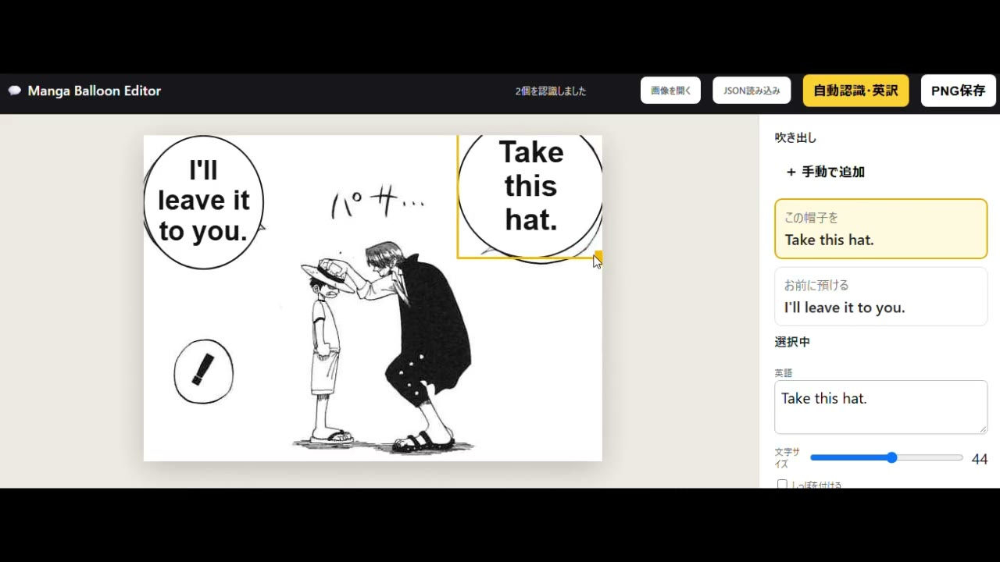
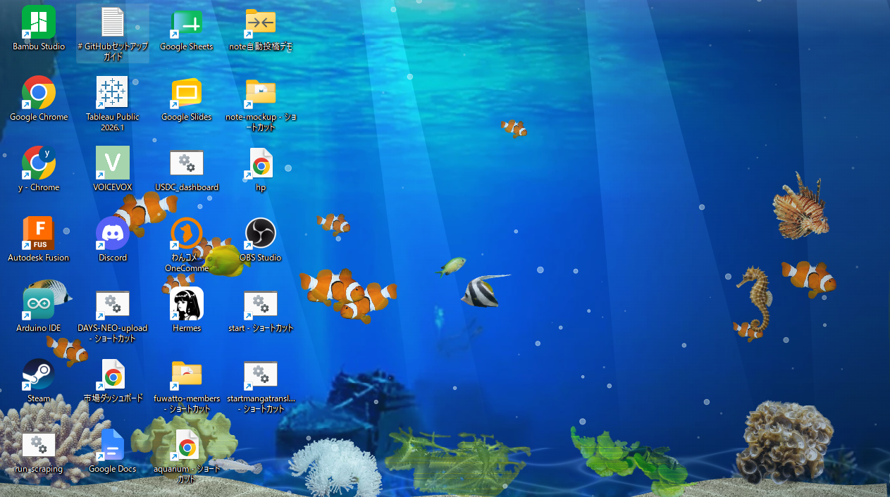

01
01
Computer Vision
AI物体検出による動画自動編集ツール
対象領域をフレーム単位で検出し、自動編集するデスクトップアプリ。ライセンス認証・配布まで構築。
PythonOpenCVTkinter
 02
02
Geospatial Analysis
商圏・カニバリ分析ダッシュボード
Huffモデル・Voronoi・アイソクロンで店舗の商圏重複を可視化するStreamlitアプリ。
StreamlitFoliumShapely
 03
03
AI / RAG
AIペルソナによるRAG評価システム
大規模ペルソナデータセットを用いてRAGの回答品質を自動評価するパイプライン。
PythonRAGLLM API

04AI / Localization
漫画原稿の吹き出し翻訳ツール
吹き出しを検出・OCR・英訳し、英文の吹き出しへ差し替えるローカルWebアプリ。
PythonCanvas
05
Content Automation
動画自動生成パイプライン
台本生成・音声合成・動画編集・サムネイル作成までを一気通貫で自動化。
Python音声合成LP制作

06Interactive Art / Web App
実写素材でつくるインタラクティブ水槽システム
実写の魚やサンゴを配置し、泳ぎや水中表現を楽しめるインタラクティブ水槽。
HTML5 CanvasJavaScript